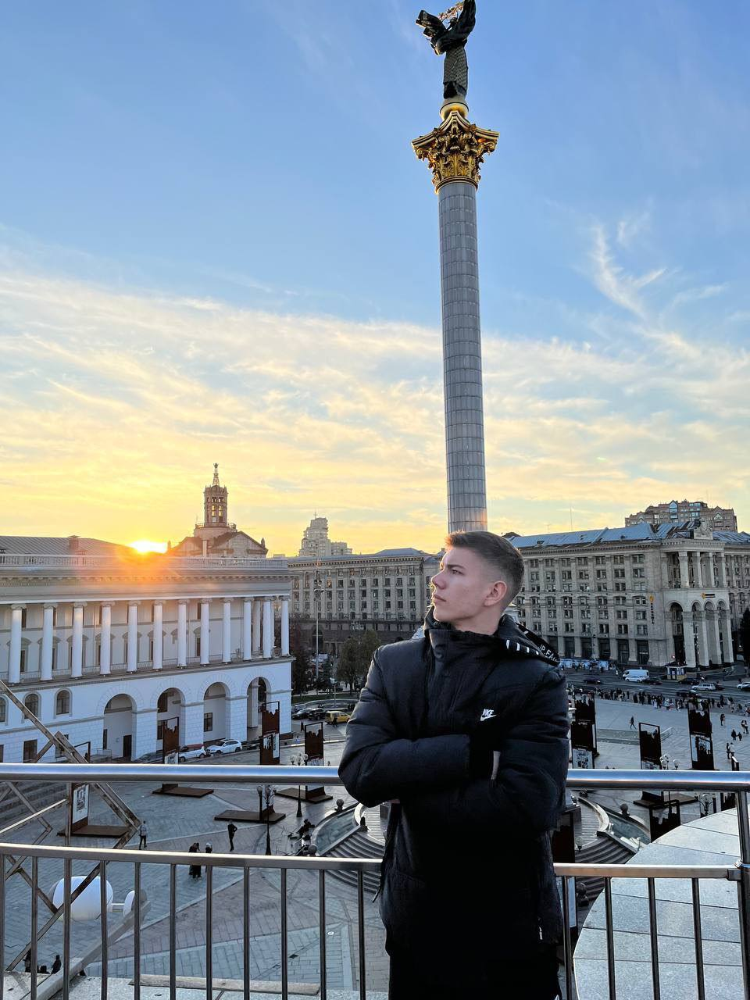

Поезія
Поширення поезії українською мовою є частиною руху на національної усвідомленості.
Ми хочемо представити збірку віршів молодого українського поета Назарія Клоса
Ми хочемо представити збірку віршів молодого українського поета Назарія Клоса

Назарій Клос
Можна жити в темряві
Та мати світлу душу.
Ти скажеш досить цих розмов
Та довести тобі я мушу,
Не стане чорним тіло,
Як маєш білу душу,
Не стане право лівим,
Не стане, мене чуєш?
Хоч як би темно не було,
А світло та й засяє,
Хоч якби тяжко не було
А поміч вже близька є.
Тяжко жити вдалині
Тяжко жити вдалині,
Смуток горло душить.
Ніби й тепло як в перлині,
Душу холод трусить.
Всюди схожі силуети,
Дощик воду мутить,
Всі спішать навколо тебе,
Всім на все байдуже .
Ти сидиш наче в нірвані,
Вітер рани сушить.
Час розкидав по куточках
Друзів, що теж тужать,
Ніби серце обірвалось,
Як це все подужати?
Я іду по справах сам,
Сам я і гуляю,
Скільки горя у душі,
Куди діти - не знаю.
Знову в руки телефон,
Близьких й рідних набираю,
Ось закінчився дзвінок,
Сумно аж до краю.
Очі вверх до тих зірок,
Може вони щось знають.
Доля б'є як молоток,
Мене не зламають.
Біля озера сиджу я,
Тихенько сумую
І на той ще час невміло
Рядки я римую,
Намагаюсь передати почуття словами,
Про війну що охопила країну вогнями!
Як повернусь додому,
Друзів зустріну
І навернеться тихенько скупа та сльозина,
Буду радий як дитя, в небо полину
В небо чисте, в небо наше,
темне у цю днину.
Хімік
Вогонь запеклих не пече,
Він є як іграшка для тебе,
Вода бурхливо скелі б'є
Та в цей раз камінь воду сточить.
Повітря полум'ям палає
Та дух до волі не здолає,
Земля від фосфору дрижить
Та воїна цим всім не вбити.
Важке почалося життя
І дух летить у небуття.
Все довше ми тримаємо оборону,
Все менше залишається загону,
Все менше в нього вже набоїв,
Все більше орків наче гною.
Невинні діти що сидять в підвалі
В знищеній в щент Азовсталі
Під захистом воїнів із сталі.
І ось сидить він у підвалі,
Готовий дати бій навалі
І тут не буде вже моралі,
бо вже запізно назавжди.
І ось настала незворотна дія, що мала статися колись,
Ми виконали наказ командира
Й на збереження життя людей здались.
І ось стоїть перед солдатом, російської армії, бурятом,
Роздягнений до пояса козак.
Його питають: що? Та як?
«С каково города Ти будеш,
а Украину Ти забудешь? - питає в нього чукча ця.
А він мовчить піднявши очі
й з під лоба зиркає на них.
Щоб побратимів врятувати,
то краще буде розказати,
щоб їхню долю зберегти.
"Я з Маріуполя , з Азову
і Україні я служив,
Я був там до кінця,
виконував наказ,
Потрібно було б - й голову зложив би".
"А звати тебе як", - вони питають ?
"А це вам знати не важливо"- він їм це відповідає.
І знову час як ніби зупинився,
І знов боєць з думками бився,
І знову й знову цунамі виринало в голові
Та він все не топився.
І ось цей день настав,
День радості й поваги,
Коли відбувся обмін воїнів зі сталі.
Двохсот героїв українців обміняли,
Які за нашу батьківщину із легкістю життя поклали б.
І знов повертається наш сумно-відомий вояка
It is not surprise motherfucker.
Спогади з травня 2022 року.
Я іду по місту горя
Де була війна,
Моя Буча кольорова,
Стала сірою на віка.
Тиша вулиць і проспектів,
На очах як ніби пелена.
Моє місто все розбите,
А в душі лиш тьма.
На дорозі кров застигла
Від сім'ї, що тут була.
Їх домівка вщент згоріла
Та душа навік жива.
Ген далеко полетіла в сині небеса .
В центрі не гуляють дітлахи,
На алеях темно, бо розбиті ліхтарі,
Моє місто є безлюдним й сірим наче дим,
Лише я іду по нім.
Там де мало бути серце,
Лиш чорна діра,
Хоч пульсує, б'ється там -
а життя нема.
Як стріла серце пробила,
тільки кров не витіка
Ніби я й жива людина-
а ніби вже й нема.
Моя Буча хоч й розбита
Будеш ти навік жива.
Неопалима купина
Неопалима купина
Горить собі і не згорає,
Навколо дим собі шуга,
Вогонь рослину не вражає,
Все знову й знову підступає
Та тут лиш облизня спіймає,
Важка є доля у рослини
Та супостата подолає,
Яка б не була тяжка днина,
А оборону все ж тримає!
По стовбуру летять іскринки
І дим навколо, як туман,
Тримає чітко стрій рослина,
Хоч і зазнала вже чимало ран.
Вогонь пройде, пройде й засуха
І дощ польється наче із відра
І враз все зникне біль тілесний й духа,
Ти лиш тримайся, знов у бій пора.
Ілюзія
Лечу на крилах уві сні,
Над містом все собі кружляю,
Воно таке красиве навесні,
Ніби Господь створив шматочок раю.
Навколо гамірно в ці дні,
Лиш дух пробудження літає,
Все таке біле ніби в молоці,
Туман швиденько землю покриває
І згасли вже зими ті дні,
В повітрі літо вже витає.
На небі сонце високо стоїть
І вітер теж легенько подуває.
Та враз це зникло все разом
Це лиш була моя уява.
Місто обвуглене в вогні
І ніч навіки тут витає
Місто горить як ніби у печі,
Хоч холод все навіки покриває,
Місто стоїть в руїнах все
І знов фугасний збоку прилітає .
І вже немає того вигляду міського
І школа з тріском швидко догорає.
І знов в уяву я пірнув,
Там квіти в полі розквітають,
Я ген над річкою польнув,
Побачив як хлоп'ята там пірнають.
Батьків не слуха,
Ніщо їх там не докоряє.
Полинув далі я до гаю,
Там дітвора в м'яча ганяє,
Але війна життя їм поламає.
І знов все зникло, ось реальність
швидко у крайність місто оповила,
Я враз до гаю-
гай палає.
Невже у світі лиш люцифер діє ?
Я враз до поля,
Там лиш горе.
Все димом вщент накрите
І все колосся враз горить,
Знедолено і тихо.
І це лиш мить,
За мить таке війна зробила
І всі надії спопелила
І прірву горя тут зробила,
Щоб ми не жили....
Та ми будем живі.
І ось вже день,
А сонця ще немає
І ворог марно місто колом обступає,
Хоч місто знищене усе,
Військові праведно стоять,
Як тільки можуть місто там тримають.
Все менше побратимів тут стає
Та ворог і так не може місто взяти.
Чимало тут загине ворогів,
Чимало згине ваших тут солдатів.
І знов удар,
і знову б'ють гармати,
І знову чути крики з під завал.
Давно хотів я зрозуміти сенс життя і розплати
Та надто пізно,
Думати не став.
Ілюзію життя простого
Війна накрила
Так, як криє град.
Життя людське війна поламала
Та не зламати дух наших солдат.
Садок вишневий вигорів до тла,
Але під серцем він стояти буде
Хай знають орди і всі вороги,
Що мій народ завжди незламним буде.
Зрада
Дивлюся на зорі,
Думками витаю,
Про тебе кобзарю я думу гадаю:
Про шлях твій,
Про долю,
Про слово твоє,
Що в тюрмах російських згубило тебе.
Хотіли зламати -лише надщербили,
Хотіли затишшя-гучніше зробили,
Хотіли почути що каєшся ти - почули лиш тверде пророче те ні.
Слова твої справдились,
Так уже й сталось.
Як тільки біда,
То всі возз'єднались.
Кайдани порвали,
На бік правди стали.
Сварилися б і далі
Біда возз’єднала.
Сидиш ти на небі,
Всіх нас розглядаєш.
За потомків радієш,
Русню проклинаєш.
Неможливо вбити того
Неможливо вбити того,
той хто не здається,
Неможливо вбити дух,
бо душа до волі рветься,
Може розум й швидко б здався,
ну а серце б'ється й б'ється.
Можна дамбу збудувати,
А вода прольється,
Можна простір весь скувати,
А рослина вгору пнеться.
Хоч яка б не була ніч,
Ну а день таки наступить,
Хоч яка б не була січ,
Але будуть люди.
Били землю,
Ґвалтували,
Але не зламали
І розсерджені на себе жалюгідно та й сконали.
"Ви хотіли сеї крові?
Ось вам, подавіться
І в розбурханій червоній самі та й втопіться".
Ви хотіли лиш почути , що я тут здаюся,
А я з шаблею кривою всіх вас не боюся.
Ви хотіли бачить сльози, так як плаче матір,
Що хлопчину вже не в змозі грудьми годувати .
Ви хотіли горя батька, той що втратив сина,
Так раділи у той день як сконав хлопчина.
Ви бажали смерті нам,
Смерть аж відсахнулась
Й бумерангом доленосним вас усіх торкнулась.
Зрада
Що таке є слово зрада?
Як тлумачиться воно?
Скільки горя і недолі
Потягло воно на дно.
Що таке є слово зрада?
Скільки вибрали його,
Скільки тіл ви погубили,
Погубили за ніщо.
Скільки грошей із тавром смерті
ви всі тримаєте в руках,
Скільки земель собі забрали
Й на них лежить невинний прах.
Скільки людей що будували
своє життя собі в думках,
Ви все це знищили , спалили й перетворили все на крах.
Ціна свободи
Скільки загинуло в бою
Хлоп'ят які ще геть зелені,
Скільки не стане вже в строю
Героїв, що загинули за тебе.
Упав в бою останній оборонець міста
Ворогів він положив під триста,
Летить він в рай і в голові слова ці виринають:
«Та ось яка ціна свободи, я вже знаю».
Підбита техніка димить,
Й піхота з поля відповзає,
Вже місяць як ніхто не спить
Й холод зими до шкіри пробирає,
Але військових щось тримає,
Якась магічна сила світу,
Якій далеко за століття,
Це сила волі і свободи,
Яка поборе всі негоди,
Яка розколе скелі враз
І сила честі і покори,
До тих хто вже загинув у цей час.
Вшануймо ж браття українці, тих хто загинули за нас,
Нехай прославлять їхні вчинки нині і повсякчас.
Іноземний доброволець
Не втомлений віками,
Не втоплений морями,
Не зрушений вітрами,
Маєш великі шрами,
Загоєнні дощами,
Завіяні вітрами.
Раніш це були рани,
Глибокі, гнійні, рвані.
Ти йдеш у бій із нами,
З достойними мужами,
Що також мають шрами,
Зумовлені боями .
Ти ззовні як день світлий,
Хоч всередині чорна тьма.
Здалеку ніби ти привітний,
А зблизька втомлений до дна.
Ти воював так довго й люто,
Але навіки тепер ця, придумана самим нечистим, в тобі живе вона,
війна.
Ти мав бути чужий
Та вже давно ти свій,
Пречистий мов апостол
До нас зійшов сюди.
Приїхав з закордону
Братам на поміч в пору,
Коли в повітрі горе витає звідусіль .
І знову канонада,
І знову б'є гармата,
І знову влучно і знову в ціль.
І почорніла вся земля від градів
І вся посічена наразі спить,
Тремтить вкраїнська чорна ріль.
Хай хоч впаду я при долині,
Востаннє бачивши калину,
Віддам життя за Україну,
Тепер це моя батьківщина
І я її мала дитина, що допоможе цій країні
І не здамося ми тут нині,
Бо ми є вірні Україні .
І один у полі воїн
I один у полі воїн,
Якщо є за що змагатись,
І один у полі воїн буде битись й не ламатись,
І не стане на коліна і в полон не здасться,
Краще він впаде в бою як діди козацькі.
Краще він буде незламним,
Ніж зламає волю,
Краще він упаде вбитим,
Ніж розверне долю.
Він загине як герой відтягнувши час,
Він загине з посмішкою - він виконав наказ.
Він останній піхотинець, що покинув нас,
Він останній справжній воїн, що поліг в той час.
Скільки б не було союзників
Скільки б союзників не було б,
А Помираєш ти один.
Казали мудрії цитати,
Казали гордії вої,
Казали лицарі й гетьмани,
Але не всі вони праві.
І Леонід упав в бою і воїни пішли за ним,
І Кривоніс поліг в строю не зломлений ніким,
І Святослав поранений в двобої упав навзнак на грішну землю,
І русичі там полягли,
За командира не за себе.
На Азовсталі як боролись за Україну всі разом
І рядовії і командири
Всі там тримались заодно,
Під Ірпінем на смерть стояли
Об'єднані в одне єдине
І оборонці не зламались,
Хоч вороги це так хотіли.
Тримайся й зараз гордий воїн
Під Вугледаром і Бахмутом,
Нехай твоя сталева воля
Стане для всіх незламним прутом!!!
Єднайтесь й далі між собою брати і сестри України,
Нехай воскресне ця держава від гір Карпат і аж до Крима.
Краще вмерти стоячи
Краще вмерти стоячи,
Ніж жити на колінах.
Краще битись з горем,
Ніж програти темним силам.
Краще вмерти гордим,
Ніж прожить понуро.
Краще згинути в двобої
Ніж померти в смуті.
Краще бути Прометеєм, що дає надію,
Ніж прожити темним смертним, що весь час так тільки мріє.
Краще битися за правду,
Ніж плести за течією,
Краще вмерти за свободу, ніж прожити без ідеї.
Чому так в світі повелося?
Чому так в світі повелося?
Чому одним збилося жити,
А іншим вмерти серед жита.
Одним гуляти в Діснейленді,
А іншим чути безперервно, як рвуться бомби за вікном.
Одним радіти мирному небу,
А іншим чути зліт ракети.
Чому одні аполітичні,
А інші б'ються героїчно.
Чому одні без діл відпочивають,
А інших в цинк навіки пеленають,
Що згинули за батьківщину й тепер лежать у домовині.
Чому одні за свою землю готові трупом полягти,
А інші мітки ставлять чітко,
Щоб окупантам помогти.
Чому одні жаліють й гроша, щоб збройним силам помогти,
А інші віддають всі гроші до перемоги й без зневір.
Одні Україну розвивають,
А інші зразу ж й розкрадають.
Одні рвуть пута та й до волі,
А інші ждуть своєї долі.
Одні пручаються дракону,
А інші здалися б й вороні.
Одні тримають стрій братерський,
А інші в чварах безперервно - як б'ються так і згинуть всі.
Одні постійно лізуть в гору,
А інші зразу морду в нору,
Бо їм так затишно у ній.
Одні скидають ярмо з шиї,
А інші просять начепить.
Одні працюють на всі сили,
А інші живуть як колись.
Чому одні обороняють, стікають кров'ю до кінця,
А інші в Польщі все скандалять, чому в них доля не легка?
Чому одні за батьківщину,
А інші за шматок хлібини і брата свого продадуть.
Чому одні країну піднімають,
А інші з неї Тай втечуть?
Чому так в світі повелося,
Чому нам так прийшлося жити
Напевно знає тільки Бог.